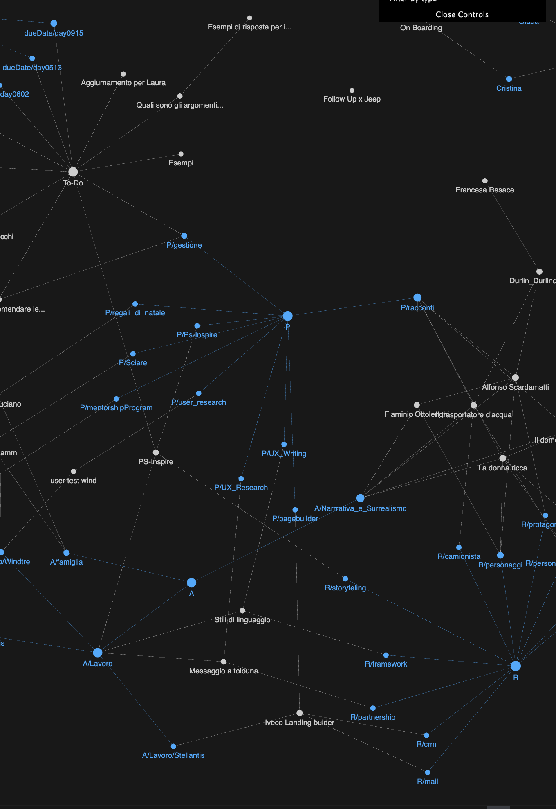
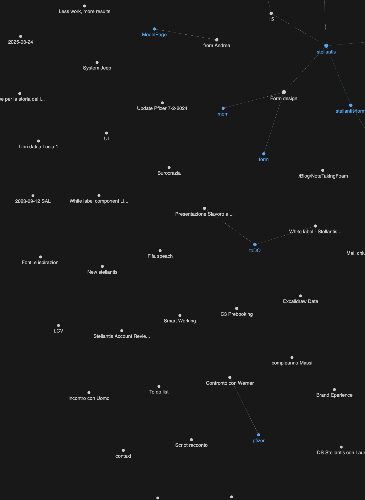

L'ossessione degli strumenti giusti
Foam IA Writer e usare gli strumenti giusti.
Ho iniziato a tenere le mie note su Obsidian, ma avevo dei grossi problemi di sync tra Mac, iPad e telefono.
Allora sono passato a gitHub per tenere tutto sincronizzato e a Visual studio code per scrivere e gestire la repository.
Una delle funzioni che mi avevano incuriosito di Obsidian era la mappa delle connessioni. Avrà un nome tecnico, mi sembra Graph View, io la chiamavo la ragnatela delle note.
Questa qui:

Passando a visuale studio code ho visto che esisteva un’estensione: FOAM. Foam permette una vista simile e allora ho iniziato a strutturare la mia libreria di note per rendere Foam qualcosa di utile e non solo un bel giochino [[NoteTakingFoam]]


Un tempo era tutto così, non c'era nulla che si collegasse a nulla. Avevo le mie directory, i file erano strapieni di contenuti e diventavano illeggibili (lo sono ancora)

Adesso continua ad esserci il nulla. Continua a non essere uno strumento di conoscenza, continua a non servire a far emergere delle connessioni tra i vari argomenti.
Inoltre mi sto iniziando a stancare di Visual studio code. Molto comodo per il codice e per i testi strutturati. Non scriverei mai un JSON senza quell’editor. Molto comodo anche per fare ricerca sui testi, scovare parole duplicate, modifiche multi-riga e altre cose nerd di questo tipo. Per mantenere la mia struttura Git + file md, ho iniziato ad usare IA Writer. Sono ancora in fase di test ma promette bene. Il suo fratello IA Presenter è già da mesi sul mio Mac e, sebbene non riesca mai ad usarlo per finalizzare le presentazioni di lavoro, è un valido aiuto per organizzare i pensieri all’inizio.
Ia Writer sembra un bel programma, che toglie tutto quello che c’è da togliere. La perfezione… insomma la sapete la citazione, non è che dobbiamo ripeterla tutte le volte.
Anche per questo mio blog sto usando GitHub + file md compilati da eleventy (11ty.dev), “a simpler static site generator” come recita la prima riga del sito ufficiale.
Il motto di questi giorni è semplificare, togliere l’inutile, arrivare all’essenza delle cose.
Per ora le sensazioni sono ottime, vediamo come proseguirà nei prossimi mesi.